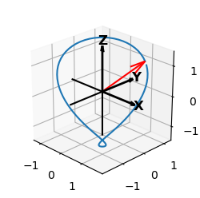

View_init() Elev and Azim Reset and Shading¶

Animation control:
| Visualization | Frame Value |
|---|---|
| Surface geometry | constant |
| Surface position | fixed to the coordinate axis |
| Surface color | constant |
| Shading and highlighting | illumination direction per frame |
| Axis coordinate | elev and azim per frame using view_init |
Surface construction is based on the Composite of Copies example. Now, both the elev and azim are changed per frame. Changing the axis coordinate and shading/highlighting results in ‘stationary viewer’ perception. The view is rotated about a single surface object. The illumination direction path as the elev and azim changes is shown in the following plot. The starting direction [1,1,1] is shown in red.
In the script that follows, note the following line:
if view_elev >= 270 : view_elev = view_elev - 360
This was needed since the elev argument in the call to ‘view_init’ only provides a unique solution in the domain of -90° to 270°.
import copy
import numpy as np
import matplotlib.pyplot as plt
from matplotlib.animation import FuncAnimation
import matplotlib.animation as animation
import matplotlib.patheffects as path_effects
import s3dlib.surface as s3d
#.. Elev and Azim changes setting illumination direction.
# 1. Define functions to examine ....................................
view_elev, view_azim = 0, 0
illum_dir = [1,1,1]
# 2. Setup and map surface .........................................
rez = 6
top = s3d.PlanarSurface(rez, basetype='oct1')
top.map_color_from_image('data/python.png')
top.map_geom_from_image('data/python_elevation.png',0.07)
front = copy.copy(top)
side = copy.copy(top)
bottom = copy.copy(top)
backside = copy.copy(top)
top.transform(translate=[0,0,1])
backfront = copy.copy(top)
bottom.transform(rotate=s3d.eulerRot(0,180), translate=[0,0,-1])
front.transform(rotate=s3d.eulerRot(0,90), translate=[0,-1,0])
backfront.transform(rotate=s3d.eulerRot(180,90), translate=[0,0,0])
side.transform(rotate=s3d.eulerRot(90,90), translate=[1,0,0])
backside.transform(rotate=s3d.eulerRot(-90,90), translate=[-1,0,0])
cube = (top+front+side+bottom+backfront+backside)
orig_cube = copy.copy(cube)
illum = s3d.rtv(illum_dir, view_elev, view_azim)
cube.shade(direction=illum).hilite(.8,direction=illum)
# 3. Construct figure, add surface plot ............................
fig = plt.figure(figsize=plt.figaspect(1), facecolor='black')
ax = plt.axes(projection='3d')
ax.set(xlim=(-1,1), ylim=(-1,1), zlim=(-1,1))
ax.set_facecolor('black')
ax.set_axis_off()
info = 'Created with S3Dlib 1.0.0, 2020 - https://s3dlib.org'
pblue, pyellow = [0.216,0.443,0.635] , [ 1.0,0.827,0.263]
text = fig.text(0.05, 0.05, info, color=pyellow, fontsize=9 )
text.set_path_effects([path_effects.withSimplePatchShadow(linewidth=3, foreground=pblue)])
ax.add_collection3d(cube)
fig.tight_layout()
# 4. Animation ......................................................
def init_fig():
return cube,
def update_fig(frame):
global cube
ax.collections.remove(cube)
view_elev = 360*frame
view_azim = 360*frame
if view_elev >= 270 : view_elev = view_elev - 360
illum = s3d.rtv(illum_dir, view_elev, view_azim)
cube = copy.copy(orig_cube)
cube.shade(direction=illum).hilite(.8,direction=illum)
ax.add_collection3d(cube)
ax.view_init( elev=view_elev, azim=view_azim )
return cube,
ani = FuncAnimation(fig, update_fig, frames=np.linspace(0.0, 1.0, 91),
init_func=init_fig, blit=False, repeat=True, interval=100)
print(">>>>>>>>>>>>>>> Animation completed, file save proceeds")
#ani.save('ZZZ.mp4') # use for movie file.
ani.save(None,writer=animation.FFMpegFileWriter()) # use for temp files.
print(">>>>>>>>>>>>>>> Save completed, screen display proceeds")
#plt.show()
print(">>>>>>>>>>>>>>> process completed")